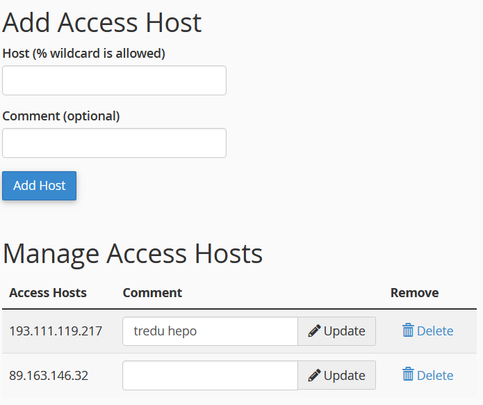

cPanel
Tietokannat
Luo uusi tietokanta kohdassa MySQL Databases

Tee tietokannalle oma käyttäjä, nimeä esimerkiksi samalla nimellä kuin tälle käyttäjälle tarkoitettu tietokanta:
Kun tietokanta on luotu pääset käyttämään sitä valitsemalla Databases / phpMyAdmin. Jos tuot tietoja toisesta lähteestä voit ensin valita Vienti (Export) ja Mukautettu (Custom). Voit valita mitä tauluja haluat mukaan SQL Dump-tiedostoon.
Kun tuot tietokantaasi tietoja valitse Tuonti (Import) tai kopioi SQL-tiedoston sisältämät käskyt suoraan SQL-ikkunaan.
Tietokantatunnukset
Kun teet tietokannan cPanelin alle määrittele tietokantayhteys näin:
- host: tunnuksesi.treok.io
- db: tekemäsi tietokanta (tunnus_tietokanta)
- user: tekemäsi käyttäjä (tunnus_tietokanta)
- password: generoimasi salasana
Huom: kun siirrät sivuston cPanelin alle on host hyvä määritellä localhost-nimellä.
Remote MySQL
Otettaessa yhteys paikallisesti php:lla web-hotellissasi olevaan tietokantaan meidän pitää sallia IP-osoitteesi (whitelist).

cPanelille tulee sallia ulkoinen yhteys MySQL-tietokantaan:
- Valitse Remote MySQL
- Kirjoita oma IP-osoitteesi Host-kohtaan (What is My IP Address?)
- Kirjoita kommentti-kohtaan esim. "koulu"
Domain
Siirrettäessä web-sovellus cPanelin alle tehdään sille oma alidomain.
- kirjaudu aluksi cPaneliin tunnuksillasi
- valitse kohda Domains / Domains
- tee uusi alidomain (Create A New Domain), nimeä esimerkiksi testi.tunnuksesi.treok.io, valitse Document Root-kohdassa haluamasi kansio (esimerkiksi testi)
- kokeile mitä tapahtuu kun menet oikeaan osoitteeseen? Jos puuttuu index.php / index.html niin tulee virheilmoitus! Tehdään vielä index.html ja testataan sitten
index.html
Lisää uusi tiedosto (index.html tai index.php) ja kirjoita sille hieman sisältöä.
Esimmerkki index.html-tiedoston sisällöstä:
<h1> Hello World ! </h1>